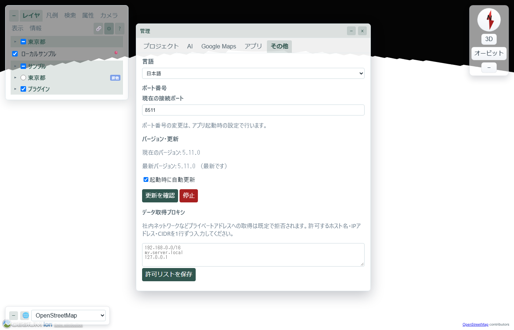
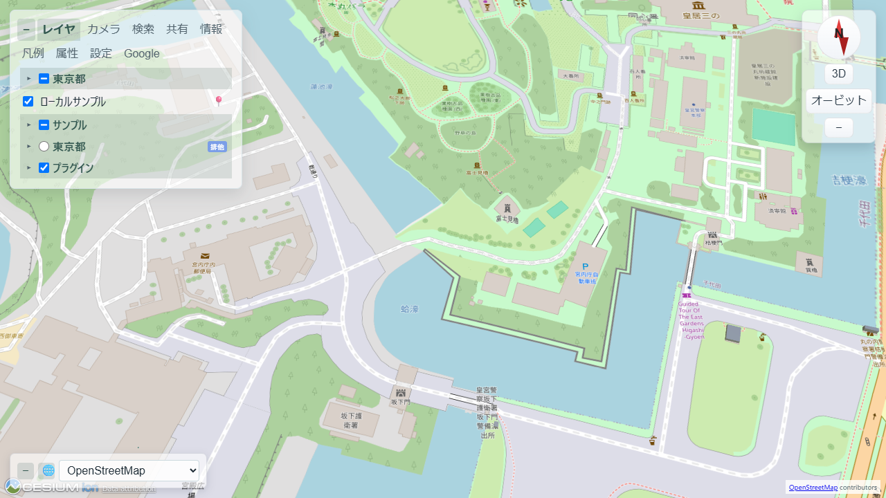
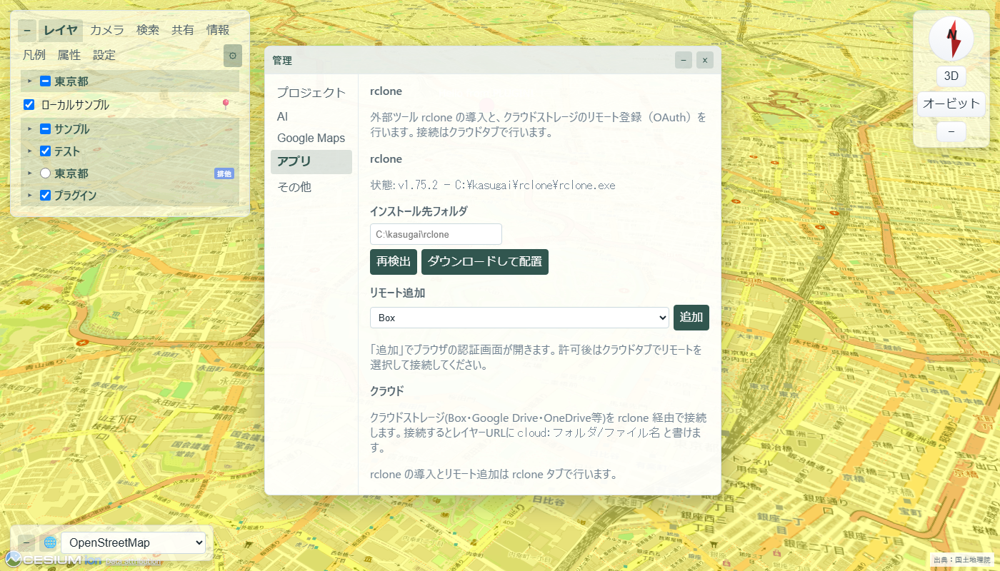

1. 概要 — ローカルアプリとは
ローカルにインストールして localhost:8510 で動くフル機能版です。【WebGIS】ブラウザ WebGIS と同じ .kasc プロジェクトを再生しつつ、ローカルだからこその以下の機能が使えます。
.kascのダブルクリック起動・外部プロジェクト登録（インストーラー版のみ）- 設定のサーバー保存・
DATA/へのファイル書き込み（/api/files） - rclone クラウドストレージ連携・仮想ドライブ割当（V5）
- AI ブリッジハブの自動待受（
:8511。GitHub Copilot / Devin / Antigravity） /api/fetch（CORS 回避プロキシ）・/api/pluginsなどの高権限 API- QGIS geo_webview からの「▶ Canvas で登録」（127.0.0.1:8510 固定で検出）
2. 導入・セットアップ — インストールと起動
配布 ZIP / インストーラー
最新のビルドは download/ フォルダから直接ダウンロードできます。インストーラー版を推奨します — .kasc ファイルのダブルクリック起動（拡張子の関連付け＝外部プロジェクト登録）はインストーラー版でのみ利用できます。
- インストーラー版（推奨）: kasugai_canvas_setup.zip を展開して
kasugai_canvas_setup.exeを実行。ポータブル版の場合は kasugai_canvas.zip を任意のフォルダに展開 - インストーラーのウィザードに従って
C:\kasugai\kasugai_canvasへインストール（ポータブル版は展開先がそのまま実行フォルダ） kasugai_canvas.exeを実行するか、ショートカットから起動。インストーラー版では.kascファイルのダブルクリック起動も使えます- 既定でブラウザが開き、KASUGAI Canvas が起動します
GitHub Releases からも同じファイルを取得できます。
リリースビルド
python run.py -B配布用 ZIP（kasugai_canvas.exe + web/ + projects/）と、NSIS が利用可能な場合はインストーラーを download\ に作成します。既定のインストール先は C:\kasugai\kasugai_canvas です。
自動更新
Rust サーバー起動時は、管理（⚙）→ その他 から最新リリースの確認・自動更新が行えます。更新時は EXE を自動的に差し替えて再起動します。

起動方法
起動方法（通常のHTTPサーバー）
cd web
python -m http.server 8520web/ をドキュメントルートに置くだけです。ブラウザで http://127.0.0.1:8520/ を開いてください。
起動方法（Rustサーバー / 開発）
cargo run --manifest-path server\Cargo.toml
# または
python run.py # 開発起動
python run.py --release # リリース版を起動ブラウザで http://127.0.0.1:8510/ を開いてください。ポートは KASUGAI_CANVAS_PORT 環境変数で変更できます。インスペクター設定は projects/<project>/kasugai_canvas.kasc に保存されます。
起動方法（.kasc ファイルから起動・インストーラー版）
インストーラー版は .kasc 拡張子を関連付けます。任意のフォルダにある .kasc をダブルクリックすると、そのファイルを外部プロジェクトとして登録して開きます。.kasc のあるフォルダがそのままプロジェクトルートになり、DATA/ などの相対参照はそのフォルダ基準で解決されるため、.kasc と DATA/ をまとめたフォルダを渡すだけで納品できます。登録はプロジェクト一覧に残り、システムとは別の場所に複数プロジェクトを管理できます（ファイル名は kasugai_canvas.kasc 以外でも可）。管理（⚙）→ プロジェクト の「プロジェクトルート」で、現在のプロジェクトが実際にどのフォルダを基準にしているか確認できます。詳細は V5: アプリ化 を参照してください。
納品パッケージの推奨構造（プロジェクト群＋共有 DATA/）
納品フォルダ/ … ワークスペースルート。ZIP にしてそのまま渡す
├─ DATA/ … 全プロジェクト群で共有（../../DATA/x で参照）
├─ ProjectsA/
│ ├─ projects.json … 群マニフェスト [{"dir":"ProjectA","kasc":"xxx.kasc","title":"計画A"}, ...]
│ ├─ DATA/ … （任意）群内共有（../DATA/x で参照）
│ ├─ ProjectA/{xxx.kasc, project.json, DATA/}
│ └─ ProjectB/{yyy.kasc}
└─ ProjectsB/
├─ projects.json
└─ ProjectC/{zzz.kasc} … ProjectsA と同じ ../../DATA/ を共有相対参照の規則: DATA/x は .kasc のあるフォルダ内、../x は1つ上（群フォルダ＝群内共有）、../../x は2つ上（ワークスペースルート＝全群共有）を指します。projects.json を持たないフラット構造（{P1, DATA}）は従来通り ../ が1つ上を指します。この構造を ZIP にすれば受け取り側は群内の .kasc を1つダブルクリックするだけで、マニフェストの一覧に従って群の全プロジェクトが登録され、全参照が解決します。
3. 使い方 — 主な機能
基本の流れ

- 設定は
projects/<project>/kasugai_canvas.kascに記述します。 - ローカルデータは
projects/<project>/DATA/以下に置き、設定から相対パスで参照できます。 - 「エクスポート(.kasc)」ボタンで変更をダウンロードし、設定ファイルと差し替えて保存してください。
web/ディレクトリは通常の HTTP サーバーにそのまま配置できます。
プロジェクト構成
web/ # フロントエンド資産(静的配信のみで動作)
├─ index.html / app.js / styles.css
└─ projects/
├─ projects.json # プロジェクト一覧 [{"id":"...","title":"..."}]
└─ <project_id>/
├─ project.json # 表示名等
├─ kasugai_canvas.kasc # インスペクター設定
└─ DATA/ # ローカルGeoJSON・3D Tiles・画像等設定内の相対パス（例: DATA/sample.geojson）は projects/<project_id>/ 直下に解決されます。../DATA/x のように .. で1階層上を指すと、プロジェクト群と並列の共有 DATA/（通常プロジェクトは projects/DATA/）を参照でき、複数プロジェクトで同じデータを使い回せます。Rustサーバー使用時は同構成の projects/ をサーバーと同階層に配置します。
納品用ローカル化の出力先（_local ワークスペース）
管理（⚙）→ アプリ → 保存 で「共有（既定）」または「専用」を選んで「納品パッケージを生成」を実行すると、元のプロジェクトを変更せず、プロジェクトフォルダの隣に <プロジェクト名>_local/ を生成します。共有の取り込み先は _local/DATA/、専用は _local/<name>/DATA/ です。HTTP・HTTPS データは http/、3dtiles: レイヤーの HTTP タイルセットは一式を http/3dtiles/（クラウド・ローカル由来はそれぞれ cloud/・local/）、クラウドは cloud/取得元ハッシュ/ に保存します。xyz: 行のリモートタイルは http/xyz/<name>/ に受け皿フォルダのみ生成して参照を書き換えます（タイル本体はユーザーが配置）。ベースマップ相当の 3D Tiles（Google Photorealistic 等）と base: 行は対象外です。
_local/ は群マニフェスト projects.json とプロジェクトの複製（書き換え済み .kasc＋ローカル DATA/）を含む自己完結パッケージで、フォルダごと ZIP にして渡せば受け取り側は複製内の .kasc を開くだけで使えます。参照は ../DATA/http/x.csv（共有）または DATA/http/x.csv（専用）の相対パスで、登録IDが変わっても維持されます。元からあったローカルデータは DATA/local/ に集約して複製され、取得したデータ（http/・cloud/）とは別フォルダに分かれます。再実行は _local/ を作り直します。詳細は V5: アプリ化 を参照してください。
設定の保存
静的サーバーでは設定をサーバーに保存しません。インスペクターの「エクスポート(.kasc)」でダウンロードし、対象プロジェクトの kasugai_canvas.kasc と差し替えてください。
インスペクター設定
xyz: OpenStreetMap | https://tile.openstreetmap.org/{z}/{x}/{y}.png
base: 地理院タイル 全国最新写真 | https://cyberjapandata.gsi.go.jp/xyz/seamlessphoto/{z}/{x}/{y}.jpg | 出典：国土地理院 | max=18
cam: 東京駅 | 35.653108 | 139.761449 | h=2200.6 | p=-30
info: https://example.com/project-info.html1 行 種類: 値 形式でレイヤー、ベースマップ、カメラ、Info、凡例等を記述します。完全な書式・オプション・ローカルファイル追加手順は .kasc 設定仕様 を参照してください。
FLY 機能（KASUGAI 独自追加機能）
kasugai_canvas.kascにfly_geojson: ルート名 | URL | speed=10 | height=100 | pitch=-30を追加- ナビゲーションツールバーから Fly モードに切り替え、ドロップダウンでルートを選択
- マウスホイール / キー
+/-で速度、キーQ/Eで高さ補正を調整 - Orbit モードで Draw タブから右クリックで点を追加、右ダブルクリックでルート描画終了→ブラウザ IndexedDB に自動保存されドロップダウンに追加
- 「取込」で .geojson ファイルを IndexedDB へインポート、描画ルートを選択中は「出力」（.geojson ダウンロード）「削除」ボタンが表示。インスペクタで
route:<ルート名>を参照することも可（例：fly_geojson: 名 | route:drawn_route_...）
クラウドストレージ連携（rclone・ローカルサーバーのみ）
- 管理（⚙）→ アプリ → rclone を開き、rclone の検出状態を確認。未導入なら「インストール先フォルダ」（既定
C:\kasugai\rclone）を指定して「ダウンロードして配置」 - 「リモート追加」で種別（Box / GoogleDrive / OneDrive / Dropbox / pCloud / MEGA / WebDAV / S3）を選んで「追加」。ブラウザで OAuth 認証画面が開くので、許可後はクラウド サブタブでリモートを選択してください
- 「ルートフォルダ」に接続の起点を指定します（省略可）。フォルダパスのほか、Box の
https://app.box.com/folder/…・共有リンク…/s/…、Google Drive の…/folders/…、OneDrive の?id=…といったフォルダURLも指定できます。URL指定はフォルダID起点で接続されるため、権限や共有経路によってリモート内の見える位置が異なる環境間でも、全員が同じフォルダをルートとして参照できます - 「読み取り専用 / 読み書き」を選んで「接続開始」。ドライブ サブタブで「割り当て」（既定 K:）を選ぶとエクスプローラーからも使える仮想ドライブになります（Windows のみ）
- レイヤーURLには
cloud:スキームが使えます。geojson: 名 | cloud:フォルダ/file.geojsonのように接続中ストレージのファイルを直接参照でき、HTTP Range にも対応しています - 読み書きで接続中は管理 → アプリ → 保存 の「.kascをクラウドへ保存」で現在の設定をクラウド上に保存できます
- 管理 → アプリ → 保存 の「現在の設定をインスペクタに追記して接続」を押すと
cloud: リモート | ルートフォルダ | perm=write | drive=K形式の設定行がインスペクタに追加されます。この行を.kascに残すと、起動時・プロジェクト読み込み時に自動接続されます（cloud: stopで停止）

ドライブ経由の読み書きは Windows WebClient の制約で約 50MB 超のファイルを扱えません（cloud: スキーム経由はこの制限を受けません）。この機能はローカルサーバー（local ティア）のみで有効です。
4. 注意点・制限 — 配布と公開の形態
KASUGAI Canvas は、ブラウザ完結の CesiumJS フロントエンドに整理されています。Rust/Axum サーバーはあくまで 最小限の静的ファイル配信で、web/ ディレクトリそのものを nginx / Apache / IIS / GitHub Pages などに置くだけで一般公開もできます。
📦 ローカル・納品
kasugai_canvas.zip または NSIS インストーラーで配布。kasugai_canvas.exe と同じ場所に web/・projects/ を配置します。
🌐 WEB 公開
web/ を静的サーバーにアップロード。同一オリジン内の projects/<id>/DATA/ を相対パスで参照できます。
📡 単独WEB配信（サーバレス）
QGIS geo_webview の KASUGAI エクスポートが出力する .kasc・DATA/・<engine>.html・index.html を含むフォルダを、エンジン（web/ の中身）と一緒に同じ静的サーバーへ置くだけで公開できます。各 <engine>.html はエンジンを自動探索して ?kasc=<URL> 付きで起動します（配置が特殊なら HTML 内の CANVAS_BASE を設定）。プロジェクト登録・ローカルサーバー不要です。
注意事項：エンジンはルートパス前提（/shared/ 等）のため web/ の中身をホストルートに置き、プロジェクトフォルダは配下の任意の場所へ配置してください。file:// で開いた場合は起動中のローカル Canvas（127.0.0.1:8510）へ /api/projects/register で自動登録して開きます（CORS 対応ビルドが必要。未対応・未起動時は案内が表示されます）。受け取り側は「ローカル Canvas を入れてダブルクリック」または「フォルダごと静的ホスティングへ」の2択で開けます。
🔒 読み取り専用
プロジェクトファイルは Web サーバー側の権限で書き込み禁止にできます。変更は「エクスポート(.kasc)」でローカルに落として差し替えます。
⚠️ 公開時の注意
外部 3D Tiles / GeoJSON は CORS が必要。Yahoo AppID 等の認証情報を .kasc に書くと公開サイトで漏洩します。